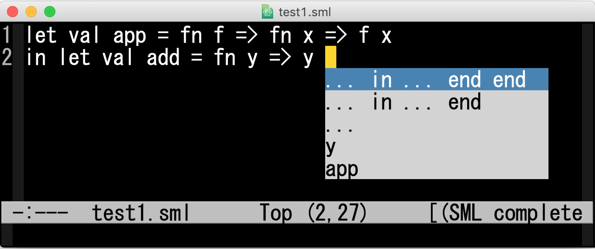
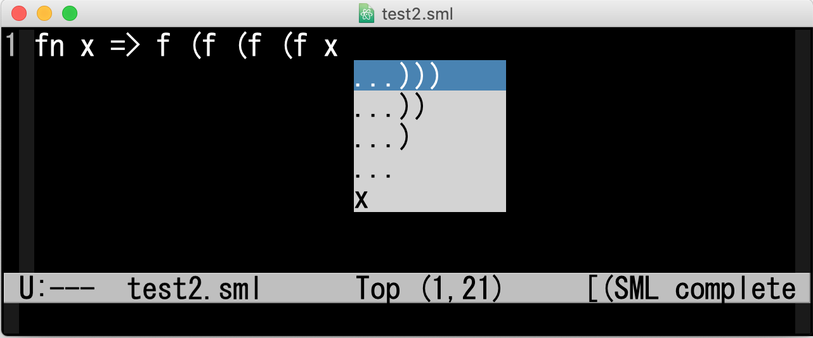

An emacs mode for syntax completion
This page provides an implementation of syntax completion for a
small subset of Standard ML as an Emacs-mode based on the approach
presented in the following paper:
How to download and how to use
Download
mode.tar.gz,
unzip and untar it, and then follow the instructions in README.
Screen shots


Back to the top page